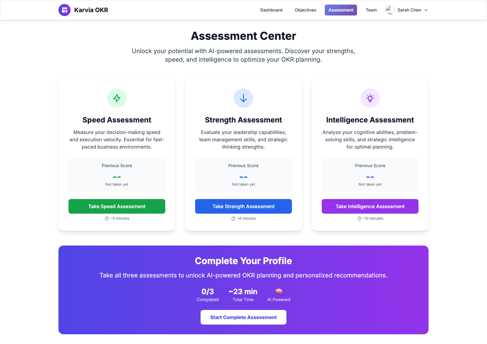
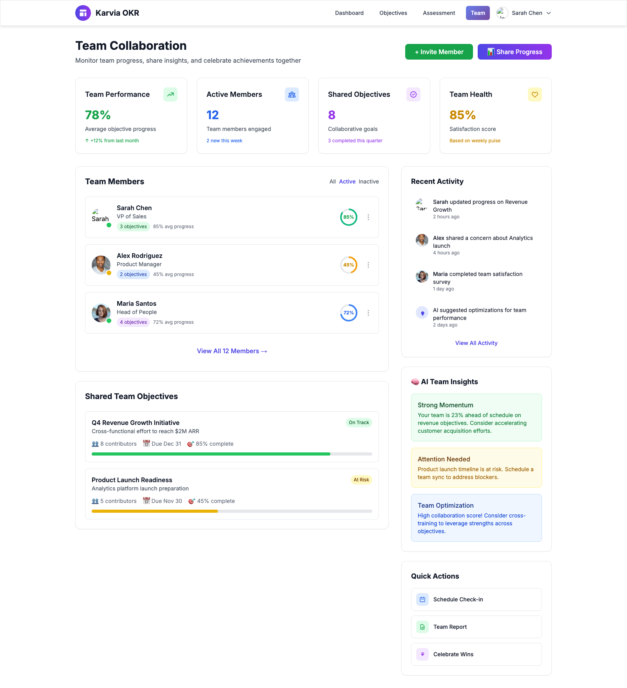
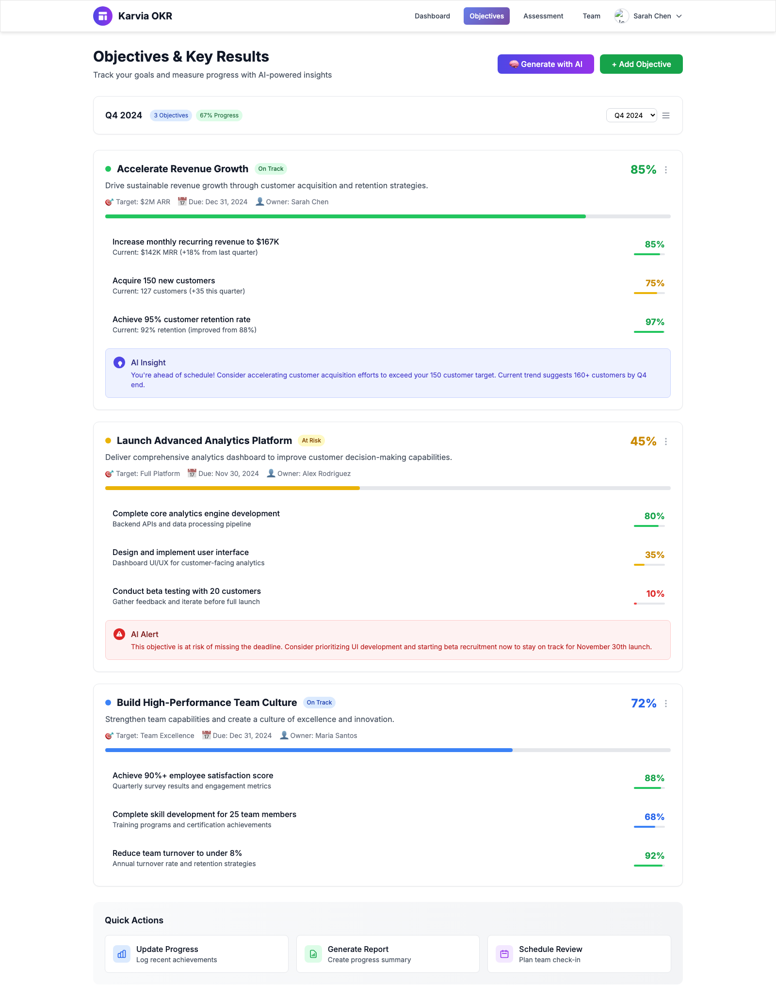
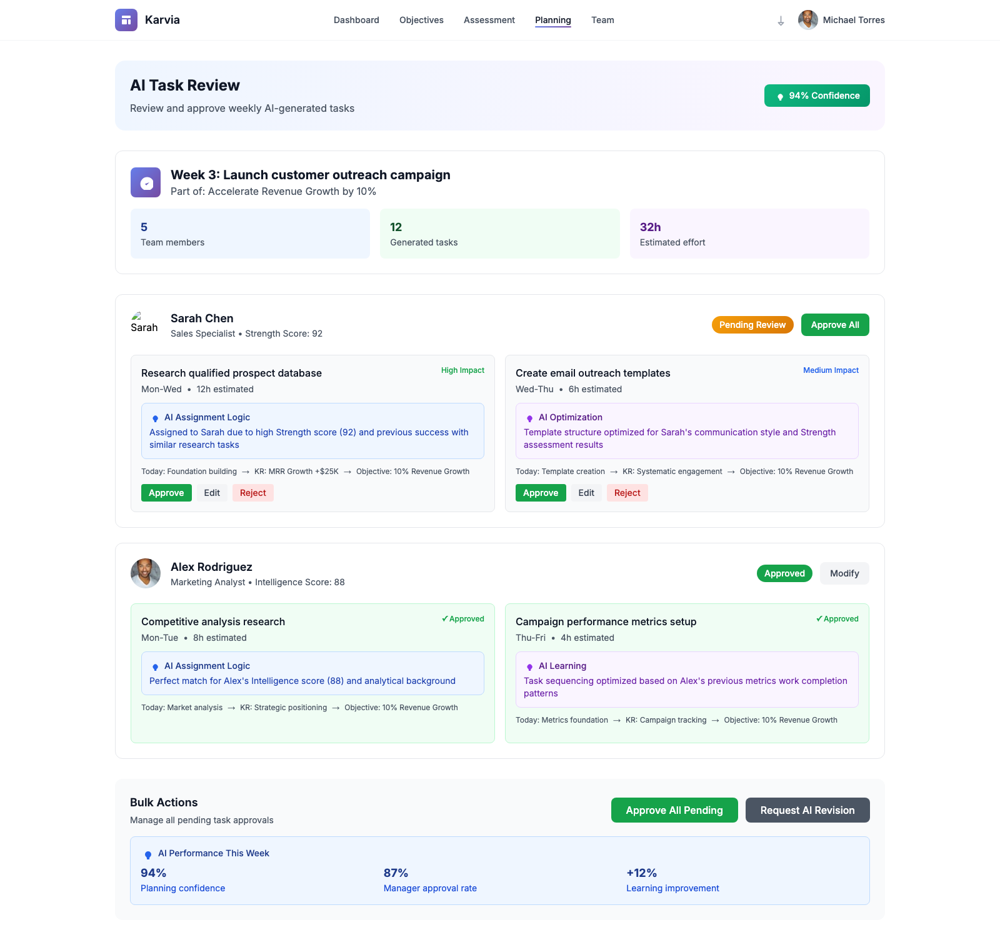
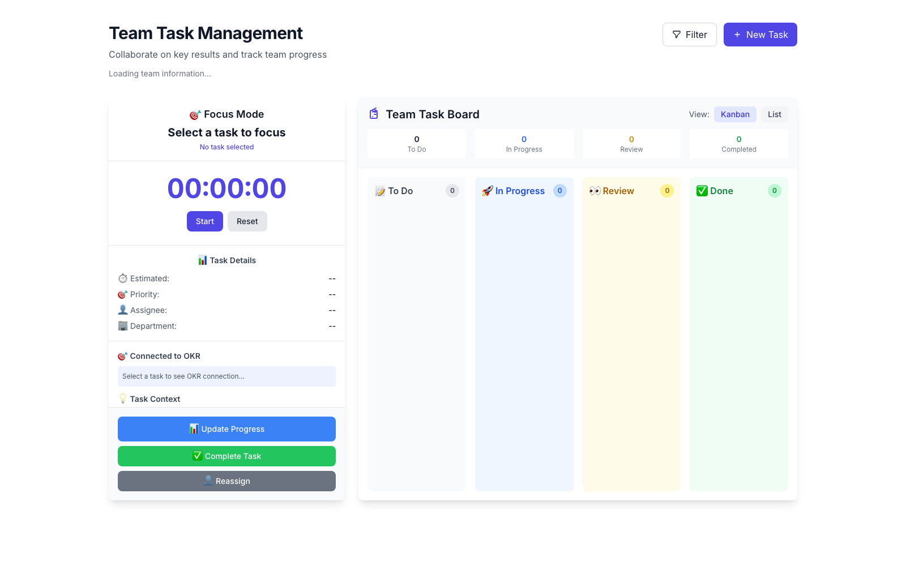

A low-friction journey for consultants to guide business growth inside Karvia.
Assess. Choose. Build teams. Co-create objectives. Plan the journey. Run daily tasks.
Faster alignment, clearer priorities, and visible progress for each client company.
One visual sequence to teach in onboarding and repeat with every new client.
SSI signals and stakeholder priorities.
Consultant-guided objective selection and sequencing.
A daily task cadence with measurable momentum.
Create a trustworthy baseline for Speed, Strength, and Intelligence.

Translate strategy into accountable team structures.

Finalize strategic objectives with measurable key results.

Break objectives into approved weekly plans and daily task execution.


Walk the journey map and explain what success looks like on each page.
Run one client scenario end-to-end: assessment to daily tasks.
Coach facilitation behavior: where to ask, decide, and lock alignment.
"We do not jump to goals. We diagnose first, choose together, design teams, commit objectives, plan responsibly, and execute daily."